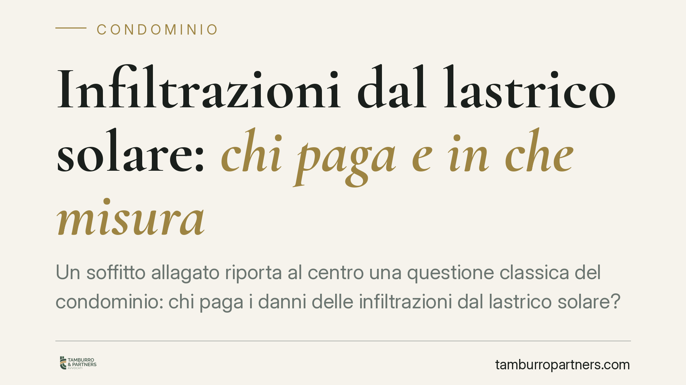

Infiltrazioni dal lastrico solare: chi paga e in che misura
Un soffitto allagato riporta al centro una questione classica del condominio: chi paga i danni delle infiltrazioni dal lastrico solare? Il Tribunale di Torre Annunziata conferma la regola dei due terzi al condominio e un terzo al proprietario esclusivo, ma addebita a quest'ultimo i costi delle opere che ha realizzato in proprio. Una pronuncia utile a chi vive sotto una terrazza problematica.

Il caso
I proprietari di alcuni appartamenti si trovano il soffitto allagato a causa di infiltrazioni provenienti dal lastrico solare sovrastante. Il lastrico è di proprietà esclusiva di alcuni condomini, che lo usano in via riservata (tipicamente come terrazza).
Il Tribunale di Torre Annunziata applica la regola codicistica: le spese di riparazione vanno divise tra chi gode in modo esclusivo del lastrico e il condominio nel suo insieme. Con una precisazione decisiva: i costi per rimuovere le opere realizzate dal proprietario esclusivo restano a suo carico.
Inquadramento normativo
La norma di riferimento è l'art. 1126 del Codice civile. Quando l'uso del lastrico solare (o del terrazzo a livello) non è comune a tutti i condomini, le spese di riparazione o ricostruzione sono così ripartite:
- un terzo a carico di chi ha l'uso esclusivo del lastrico;
- due terzi a carico di tutti i condomini dell'edificio ai quali il lastrico serve da copertura, in proporzione ai millesimi.
La ratio è semplice: il lastrico svolge una doppia funzione. È superficie goduta dal singolo, ma è anche tetto per gli appartamenti sottostanti. Da qui la ripartizione mista.
Il Tribunale aggiunge un correttivo coerente con i principi generali: le spese legate alle opere realizzate dal titolare esclusivo (pavimentazioni, strutture aggiunte, manufatti) non rientrano nel riparto dell'art. 1126 c.c. e gravano integralmente su chi le ha volute. Rimuoverle per riparare il guasto è un costo che non può essere scaricato sul condominio.
La pronuncia richiama anche gli strumenti cautelari a tutela di chi subisce il danno: la denuncia di danno temuto (art. 1172 c.c.) e il relativo procedimento (art. 688 c.p.c.), utilizzabili quando esiste il pericolo attuale di un danno grave e prossimo derivante da un edificio o da un'opera.
Implicazioni pratiche
Per il proprietario dell'appartamento allagato, la decisione conferma un dato rassicurante: il danneggiato può agire sia verso il condominio sia verso il titolare del lastrico, e la condanna alle spese può essere pronunciata in solido. In concreto significa poter chiedere l'intero a uno qualsiasi degli obbligati, salvo poi il regresso tra loro.
Per il proprietario esclusivo del lastrico o della terrazza, l'avvertimento è chiaro. La quota di un terzo non è una franchigia che copre tutto: se il problema deriva anche dalle opere che ha installato, quella parte di spesa è solo sua. Pavimentazioni mal posate, massetti, pergolati fissati al piano di copertura diventano un fattore di rischio economico.
Per il condominio, la pronuncia ricorda che i due terzi gravano sulla collettività a prescindere dall'individuazione di un "colpevole": è la funzione di copertura a fondare l'obbligo, non la condotta.
Cosa fare in concreto
- Documentate subito il danno. Fotografate infiltrazioni, aloni e dispersioni, annotate le date e conservate eventuali comunicazioni con l'amministratore.
- Richiedete un'ispezione tecnica per individuare l'origine delle infiltrazioni e distinguere il guasto della copertura dalle opere aggiunte dal titolare del lastrico.
- Attivate l'amministratore per iscritto, chiedendo l'inserimento della questione all'ordine del giorno dell'assemblea e la ripartizione corretta ex art. 1126 c.c.
- Valutate la denuncia di danno temuto (artt. 1172 c.c. e 688 c.p.c.) se il pericolo è attuale e grave e la riparazione tarda.
- Conservate i preventivi distinti per la copertura e per la rimozione delle opere: la separazione delle voci è spesso decisiva in sede di riparto e di giudizio.
La perizia tecnica che distingue chiaramente le cause del guasto resta lo snodo più importante. È su quella base che si fonda sia la corretta ripartizione sia l'eventuale azione in giudizio.
Disclaimer
Contributo informativo a cura di Tamburro & Partners - Avv. Giuseppe Tamburro. Non costituisce parere legale.
Ogni condominio ha una storia a sé.
Se gestisci un'amministrazione e vuoi un confronto su una specifica questione condominiale, scrivi allo studio. Ti rispondiamo entro un giorno lavorativo.